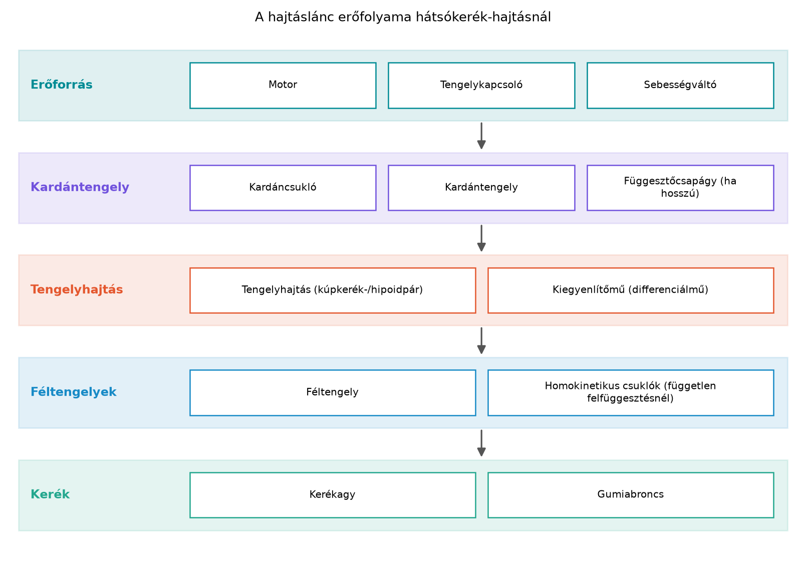

Az egyik leggyakoribb hajtáslánc-panasz a műhelyben az, hogy kanyarodáskor kattogó, ropogó hang jön az első kerék felől, vagy gyorsításkor rezgést érez az utas a padlólemezen. A hang forrása gyakran a féltengely homokinetikus csuklója, a rezgés pedig a kardántengely kopott csuklójától vagy a rosszul szerelt, kiegyensúlyozatlan tengelytől származik. Ahhoz, hogy a szerelő biztosan megtalálja az okot, pontosan ismernie kell, hogyan viszi át a motor nyomatékát a hajtáslánc a kerekekre, és hogy a futómű mozgása miatt miért van szükség szögben és hosszban is elmozdulni képes csuklókra. Ebben az alfejezetben a kardánhajtást, a csuklós tengelyeket, a kardáncsukló szöghibáját és annak kiküszöbölését, valamint a homokinetikus (egyenletes szögsebességű) csuklókat és a féltengelyeket vizsgáljuk meg.
Képzeljünk el egy klasszikus hátsókerék-hajtású személyautót. A motor és a sebességváltó elöl, a hajtott hátsó híd hátul helyezkedik el. A forgatónyomatékot a váltótól a hátsó hídban lévő kiegyenlítőműhöz egy hosszú, csuklókkal tagolt tengely, a kardántengely továbbítja. A hátsó felfüggesztés rugói összenyomódnak, a híd kissé elmozdul, ezért a tengelynek folyamatosan változó szöget és hosszúságot kell kiegyenlítenie. A kardántengelyen lévő kardáncsuklók ezt a szögváltozást teszik lehetővé, bár nem tökéletesen egyenletes szögsebességgel. Ha a tengely túl hosszú, középen egy függesztőcsapágyat építenek be, hogy csökkentsék a behajlást és a rezgést. Elsőkerék-hajtású autókon a váltó közvetlenül a motor mellett van, és a hajtott kerekeknél a felfüggesztés nagyobb utat jár be, ezért ott rövid féltengelyek viszik át a nyomatékot, amelyek mindkét végén homokinetikus csukló található. A következő ábra a hajtáslánc erőfolyamát mutatja.

A vázlat azt mutatja, hogy a hajtáslánc minden tagjának megvan a maga feladata: a motor a forgatónyomatékot állítja elő, a váltó módosítja az áttételt, a kardántengely a távolságot hidalja át, a differenciálmű a kanyarodáshoz szükséges kerék fordulatszám-különbséget engedi, a féltengelyek pedig a kerekekhez vezetik a nyomatékot.
Definíció. Kardáncsukló (Hooke-csukló). Olyan elfordulásra képes, nem homokinetikus (nem egyenletes szögsebességű) csukló, amely két, egymásra merőlegesen elhelyezkedő villa és egy keresztdarab segítségével viszi át a nyomatékot, miközben a bemenő és a kimenő tengely szöget zárhat be egymással.
Definíció. Homokinetikus csukló. Olyan csukló, amely a bemenő és a kimenő tengely szöghelyzetétől függetlenül pillanatnyilag is azonos szögsebességet továbbít, tehát nincs szögsebesség-ingadozás. Ilyenek a golyós (Rzeppa) és a háromkarú (tripod) csuklók.
Definíció. Féltengely. A tengelyhajtás (differenciálmű) és a hajtott kerék közötti, viszonylag rövid tengely, amely elsőkerék-hajtású járműveken homokinetikus csuklókkal, merev hátsó hídon pedig gyakran merev, egyenes tengelyként csatlakozik a kerékagyhoz.
Definíció. Függesztőcsapágy. Hosszú, két részből álló kardántengely középső alátámasztására szolgáló csapágy, amelyet gumibakkal rögzítenek a karosszériához vagy a segédvázhoz, hogy csökkentse a tengely behajlását és a rezgéseket.
A hagyományos kardáncsukló fő elemei a következők:
A kardáncsukló működése közben a keresztdarab lehetővé teszi, hogy a két villa egymáshoz képest szögben elforduljon. Azonban ha a hajtott tengely szöget zár be a hajtó tengellyel, a kimenő tengely szögsebessége egy fordulaton belül kétszer gyorsul és lassul a bemenő tengelyhez képest. Ezt a jelenséget nevezzük a kardáncsukló szöghibájának.
Összefüggés. Ha a bemenő tengely szögsebessége , a tengelyek által bezárt szög , és a bemenő villa elfordulási szöge , akkor a kimenő tengely pillanatnyi szögsebessége:
A kimenő tengely szögsebesség-ingadozása és közötti érték között ingadozik. Kis szögeknél ez a hiba kicsi, de például esetén a kimenő tengely pillanatnyilag kb. 15%-kal gyorsulhat vagy lassulhat a bemenőhöz képest. Ez rezgést és egyenetlen futást okoz.
A szöghiba kiküszöbölésének klasszikus módja a kettős kardáncsukló vagy a szöghibamentes elrendezés. A feltételek:
Ilyenkor az első csukló okozta szögsebesség-ingadozást a második csukló egyenlíti ki, így a teljes hajtás homokinetikusan viselkedik. A gyakorlatban a hátsókerék-hajtású autóknál a váltó kimenő tengelye és a differenciálmű bemenő tengelye párhuzamosra van állítva, a kardántengely pedig megfelelően összeszerelt kettős csuklóval csatlakozik.
Az ábra bal oldalán a bemenő villa a keresztdarab egyik csappárját, a rá merőleges kimenő villa a másikat fogja; a csapokon tűgörgős csapágycsészék ülnek, a két tengely szöget zár be. A jobb oldali görbék a fenti képletből számoltak: -nál az arány 0,866 és 1,155 között, fordulatonként kétszer ingadozik, kis szögeknél az ingadozás alig észrevehető. A HTML-változatban a szög állítható, és kettős kardánnál összevethető a helyes Z-elrendezés (azonos villasík, az ingadozás kiegyenlítődik) a 90°-kal elforgatott középső villával (az ingadozás összeadódik).
Hosszú tengelytávú járműveken (kisteherautók, egyes terepjárók) a kardántengely olyan hosszú, hogy saját tömege és a forgás közben fellépő hajlítóerők miatt behajolna, ami rezgéshez és a csuklók gyors kopásához vezetne. A függesztőcsapágy ilyenkor a tengelyt két szakaszra osztja: az első szakasz a váltótól a függesztőcsapágyig, a második szakasz a függesztőcsapágytól a differenciálműig tart. A csapágyat gumibakba ágyazzák, amely csillapítja a kardántengely kis elmozdulásait és rezgéseit, és megengedi a híd vagy a karosszéria kis mozgását. A gumibak elöregedése, szakadása jellegzetes dübörgést, ütésszerű rezgést okoz gyorsításkor vagy terhelésváltáskor.
A hajtott kerekeknél a kormányzott kerekek elfordulása és a felfüggesztés rugóútja sokkal nagyobb csuklószögeket és hosszváltozásokat igényel, mint a merev híd kardántengelyénél. Itt homokinetikus csuklókat alkalmaznak, amelyek állandó szögsebességet adnak át. A homokinetikus csuklók két fő típusa:
Fix csukló (Rzeppa-csukló): nem enged axiális elmozdulást, de nagy szögben (jellemzően 45–50°-ig, ellenőrizendő: gyártói adat) képes elfordulni. A külső csésze belső pályáján és a belső kosár pályáján acélgolyók gördülnek, amelyeket egy ketrec tart a szögfelező síkban. A golyók a két tengely szögfelező síkjában helyezkednek el, ezért a bemenő és kimenő tengely szögsebessége mindig azonos. A Rzeppa-csuklót általában a féltengely kerék felőli (külső) oldalára építik, mert ott kell a legnagyobb szögváltozás.
Eltolódó csukló (például háromkarú – tripod): a kerék felfüggesztésének mozgása során a féltengely hossza is változik. A belső csuklónak fel kell vennie ezt az axiális elmozdulást, miközben továbbítja a nyomatékot. A háromkarú csuklóban egy csésze belső pályáján három tűgörgős görgő fut a csésze három tengelyirányú pályáján; a görgők a pályák mentén elmozdulva veszik fel a hosszváltozást, a csapon kissé elbillenve a szögelfordulást. A szerkezet így egyidejűleg engedi a szögelfordulást és az axiális csúszást.
Eltolódó golyós csukló (például egyenes vagy ferde pályás; ellenőrizendő: típusjelölés): golyós kivitel, amely néhány cm axiális elmozdulást is megenged; belső csuklóként használják.
A fix és az eltolódó csukló párosítása biztosítja, hogy az elsőkerék-hajtású autó féltengelye a kerék kormányzása és a rugóút során is folyamatosan, egyenletesen át tudja vinni a nyomatékot. A hátsó, független felfüggesztésű hajtott tengelyeknél hasonló elrendezést használnak.
Az ábra felső része a teljes féltengelyt mutatja: a váltó felőli végén a tripod eltolódó csukló, a kerék felőli végén a Rzeppa fix csukló ül, mindkettőt bilinccsel rögzített gumiharang védi. A Rzeppa-csukló metszetén a golyókat a ketrec a két tengely szögfelező síkjában tartja; a tripod csuklóban a háromkarú csillag görgői a tulipán hosszirányú pályáin el tudnak csúszni, így a féltengely hossza változhat. A HTML-változatban a nézetek között váltva a Rzeppa-csukló szögben is látható, rámutatásra pedig az alkatrész neve és szerepe jelenik meg.
Megjegyzés. A tankönyvi „szárazcsukló” elnevezés a kenőolajtól független, zárt zsírtöltésű (vagy kenés nélküli rugalmas, gumitárcsás) csuklókat jelöli (ellenőrizendő: a kerettanterv szóhasználata); a homokinetikus csukló zsírral töltött, gumiharanggal zárt egység. A járműves kardáncsukló tűgörgős csapágyai is zsírkenésűek, nem olajban futnak.
A féltengely általában üreges vagy tömör acélrúd, amelynek mindkét végére homokinetikus csukló, azokra pedig gumiharang (porvédő) szerelt. A gumiharang kettős szerepet tölt be:
A gumiharang elszakadása esetén a csukló előbb-utóbb tönkremegy: a zsír kiszóródik, a golyók és a pályák melegedni, majd kopni kezdenek. Ezért az időszakos átvizsgáláskor a harangokat mindig gondosan ellenőrizni kell. A szakadt harangot azonnal cserélni kell; ha a csukló már kattog, akkor magát a csuklót vagy a teljes féltengelyt is cserélni kell.
1. példa – A kardáncsukló szögsebesség-ingadozása
(számítás).
Egy hátsókerék-hajtású autó kardántengelye a váltó és a differenciálmű
között
szöget zár be. A bemenő tengely fordulatszáma állandó
.
Számítsuk ki a kimenő tengely szögsebességének maximális és minimális
értékét.
Megoldás.
A bemenő szögsebesség:
A kimenő szögsebesség ingadozik
és
között.
Maximális:
Minimális:
Tehát a kimenő tengely szögsebessége kb.
és
között ingadozik, ami kb. 0,55%-os eltérés. Ez a forgás egyenetlensége.
Ha a szög nagyobb lenne, az ingadozás jelentősebbé válna, ezért a
szöghibamentes elrendezéssel kiküszöbölik.
2. példa – Homokinetikus csukló esetén az
áttétel.
Ugyanez a hajtáslánc homokinetikus csuklóval (például Rzeppa) szerelve,
mellett milyen szögsebességet ad át?
Megoldás.
A homokinetikus csukló definíció szerint minden pillanatban
.
Tehát a kimenő szögsebesség állandó
,
nincs ingadozás. Ezért a kerék felé vezető hajtásnál alapvető a
homokinetikus csukló alkalmazása.
A kardánhajtás és a féltengelyek állapotát az alábbi ellenőrzőlista szerint vizsgáljuk:
Ügyfélpanasz: „Jobbra kanyarodva kattogó hangot
hallok az első kerék felől, gyorsításnál erősödik.”
Tünet: A hang ritmikus, a kerék fordulatszámával
arányos, csak kanyarban jelentkezik, egyenesben nem.
Hipotézis: A külső homokinetikus csukló kopott, esetleg
a porvédő harang szakadt.
Vizsgálat:
1. A járművet biztonságosan emeljük, a kerekeket elforgatjuk.
2. Ellenőrizzük a külső csukló porvédő harangját. A harang szakadt, zsír
kiszóródott, a csuklóházon zsírnyomok láthatók.
3. A kereket kanyarodási helyzetbe fordítva, a féltengelyt kézzel
mozgatva enyhe játék érezhető a külső csuklónál.
4. A csukló forgatása közben kattogó hang hallható, amely a
kanyarodásakor erősödik.
Ok: A szakadt harang miatt szennyeződés jutott a
Rzeppa-csukló golyópályáira, a pályák kikoptak, a golyók egyenletlenül
gördülnek.
Javítás: A teljes féltengely cseréje (mert a csukló már
károsodott, a csak harangcsere nem elég), új anyákkal és a gyártói
meghúzási nyomatékokkal.
Ellenőrzés: Szerelés után próbaút; a kattogás megszűnt,
a kormány kanyarodáskor egyenletesen jár.
Megelőzés: A gumiharangok rendszeres ellenőrzése,
azonnali csere szakadáskor, a gyári zsírzási és szerelési előírások
betartása.
Biztonsági korlát. A feladat tanműhelyi környezetre, oktató felügyeletére és a gyártói javítási utasítás betartására vonatkozik; a megadott értékek tanulási példák. A jármű alá csak a gyártói emelési pontokon felemelt és mechanikusan reteszelt műhelyi járműemelőn, vagy bakra támasztva szabad bemenni. A fékeket, a kormányt és a hajtásláncot a gyártó szerint kell rögzíteni.
Cél: A féltengely kiszerelése, a homokinetikus csuklók állapotának ellenőrzése, szükség esetén a féltengely cseréje.
Jármű- és adatazonosítás: A pontos típus, motorszám, évjárat, gyártói javítási utasítás és a meghúzási nyomatékok kikeresése.
Szükséges szerszámok és mérőeszközök:
- Emelő, bakok, kerékkulcs.
- Csavarhúzók, csavarkulcsok, racsnis kulcs, nyomatékkulcs.
- Nyomatékkulcs a gyártói értékekhez.
- Kalapács, lehúzószerszám a kerékagy megbontásához.
- Zsír és új porvédő harang, ha csak a harangot cseréljük (de ha a
csukló kopott, a teljes féltengelyt cseréljük).
- Egyéni védőeszköz: védőkesztyű, védőszemüveg.
Munkalépések:
1. A kerékcsavarokat és (ha a gyártó engedi) a kerékagy központi anyáját
(vagy a féltengelycsavart) még a jármű talajon állásakor, behúzott
rögzítőfékkel lazítsd meg (ellenőrizendő: gyártói javítási utasítás); a
nagy nyomatékú anyát nem szabad a levegőben lévő, bakon álló járművön
erővel lazítani, mert a jármű lebillenhet.
2. Vízszintes, szilárd talajon emeld meg a járművet a gyártói emelési
pontokon, támaszd bakra (vagy rögzítsd mechanikusan reteszelt műhelyi
emelőn), és csak ezután szereld le a kereket. Kocsiemelővel tartott
jármű alá vagy mellé munkát kezdeni tilos.
3. A központi anyát most csavard ki; visszaszereléskor új anyát a
gyártói nyomatékkal húzz meg (ellenőrizendő: gyártói adat).
3. A futómű alsó csatlakozásait a gyártói eljárás szerint bontjuk, hogy
a kerékagy elmozdítható legyen, és a féltengely a csuklókból
kiakasztható legyen.
4. A belső homokinetikus csukló karimáját a váltóház felől szereljük le,
ügyelve a hajtóműolajra (ha az oldalló kifolyhat).
5. A féltengelyt óvatosan kihúzzuk a kerékagy vagy a váltó felől,
ügyelve a porvédő harangokra és a tömítésekre.
6. A csuklókat szemrevételezzük: a gumiharang szakadt-e, a csukló
golyópályái kopottak-e, van-e radiális vagy axiális játék.
7. Ha csak a harang sérült, de a csukló ép, a harangot cseréljük: a régi
zsírt eltávolítjuk, az új harangot megtöltjük a gyártó által előírt
mennyiségű és típusú zsírral, majd felhelyezzük.
8. Ha a csukló kopott vagy kattog, a teljes féltengelyt cseréljük új
vagy gyárilag felújított egységre.
9. Visszaszereléskor az új rögzítőelemeket (kerékagyanya,
karimacsavarok, biztosítógyűrűk) használjuk; a meghúzási nyomatékokat a
gyártói előírás szerint alkalmazzuk (ellenőrizendő).
10. A hajtóműolajszintet ellenőrizzük, szükség szerint pótoljuk.
11. Próbaúton ellenőrizzük: nincs kattogás, rezgés, a kormány
egyenletesen jár.
12. A munkát a munkalapon és a szervizkönyvben dokumentáljuk.
Tipikus hibák a szerelésnél:
- A porvédő harangot túl kevés zsírral szerelik, vagy nem a megfelelő
típusú zsírt használják.
- A kerékagyanyát nem a gyártói nyomatékkal húzzák meg, ami
csapágykárosodást vagy kilazulást okoz.
- A régi tömítéseket újra felhasználják, ami olajszivárgást
eredményez.
- A féltengely beszerelésekor a harangokat megsértik, ami későbbi
csuklóhibát okoz.
1. feladat (A). Nevezd meg a kardáncsukló fő
elemeit, és magyarázd el a szöghiba jelenségét egy mondatban!
2. feladat (A). Határozd meg a homokinetikus csukló
definícióját, és sorold fel a két leggyakoribb típusát!
3. feladat (B). Egy kardántengely bemenő fordulatszáma
,
a csukló szöge
.
Számítsd ki a kimenő szögsebesség maximális és minimális értékét
rad/s-ban!
4. feladat (B). Rajzolj vázlatot egy elsőkerék-hajtású
autó hajtott futóművének féltengelyéről: jelöld a külső fix
Rzeppa-csuklót, a belső eltolódó háromkarú csuklót, a porvédő
harangokat, a kerékagyat és a váltó differenciálművét! Magyarázd el,
miért kell az egyik csuklónak axiálisan eltolódónak lennie!
5. feladat (C). Miért nem elegendő egyetlen
kardáncsukló a hátsókerék-hajtású autó kardántengelyénél? Milyen
feltételekkel lehet két kardáncsuklóval homokinetikussá tenni a
hajtást?
6. feladat (D). Ügyfél panasza: „Gyorsításkor rezeg az
autó, majd terhelésváltáskor dübörgés hallható hátul.” Hogyan
diagnosztizálnád? Sorold fel a lehetséges okokat, és a mérési/vizsgálati
lépéseket!
Önellenőrzés – válaszok:
1. Hamis. A kardáncsukló szögsebesség-ingadozást okoz, ha a tengelyek
szöget zárnak be.
2. A bemenő és kimenő tengely párhuzamos, a közbenső tengely villái
azonos síkban, a két csukló szöge egyenlő.
3. Az eltolódó (háromkarú/tripod) csukló.
4. A zsír kiszóródik, szennyeződés jut be, a csukló kopásnak indul,
végül kattog, és tönkremegy.
5.
,
így a maximális arány
,
a minimális
.
Tehát kb. ±1,5% ingadozás.
6. A Rzeppa-csukló fix, nem enged axiális elmozdulást; a belső eltolódó
csuklóra szükség van.
1. feladat (A) megoldása.
A kardáncsukló fő elemei: bemenő villa, kimenő villa, keresztdarab,
tűgörgős csapágyak, csapágycsészék, rögzítőgyűrűk. A szöghiba: ha a két
tengely szöget zár be, a kimenő tengely szögsebessége egy fordulaton
belül kétszer gyorsul és lassul.
2. feladat (A) megoldása.
A homokinetikus csukló olyan csukló, amely a tengelyek szögétől
függetlenül pillanatnyilag azonos szögsebességet ad át. Típusai: fix
Rzeppa-csukló és eltolódó háromkarú (tripod) csukló.
3. feladat (B) megoldása.
Bemenő szögsebesség:
Maximális:
Minimális:
Tehát a kimenő szögsebesség kb. 307–321 rad/s között ingadozik.
4. feladat (B) megoldása.
A vázlaton a féltengely bal oldalán a kerékagyhoz csatlakozó fix
Rzeppa-csukló, jobb oldalán a váltóhoz csatlakozó háromkarú eltolódó
csukló látható. Mindkét csuklót gumiharang fedi. A rugóút során a
felfüggesztés geometriája miatt a féltengely hossza változik, ezért a
belső csuklónak axiális elmozdulást is fel kell vennie. A külső fix
csukló viszont a kormányzott kerék nagy elfordulását teszi lehetővé.
5. feladat (C) megoldása.
Egyetlen kardáncsukló nem homokinetikus, ezért rezgést és egyenetlen
futást okozna, ha a tengelyek szöget zárnak be. Két kardáncsuklóval úgy
érhető el homokinetikus hajtás, hogy: (1) a bemenő és kimenő tengely
párhuzamos, (2) a közbenső tengely villái azonos síkban állnak, (3) a
két csukló szöge egyenlő. Ekkor az első csukló ingadozását a második
csukló ellentétes fázisban kiegyenlíti.
6. feladat (D) megoldása.
Lehetséges okok: kardántengely kiegyensúlyozatlansága, kopott
kardáncsukló, függesztőcsapágy vagy annak gumibakja sérült, rosszul
szerelt villa, hátsó futómű vagy féltengely-csukló hibája. Vizsgálat:
emelés, a kardántengely szemrevételezése, csuklójáték ellenőrzése, a
függesztőcsapágy gumibakjának ellenőrzése, próbaút a rezgés
fordulatszám- vagy sebességfüggésének megállapítására, a kerék
kiegyensúlyozottságának ellenőrzése. A tipikus hiba a
kiegyensúlyozatlanság vagy a kopott csukló.
A kardánhajtás a motor nyomatékát a távoli hajtott tengelyhez továbbítja csuklós tengelyeken keresztül. A hagyományos kardáncsukló (Hooke-csukló) keresztdarabbal dolgozik, de szögsebesség-ingadozást okoz, ha a tengelyek szöget zárnak be. A szöghiba kiküszöbölésére két kardáncsuklót alkalmaznak, feltéve hogy a bemenő és kimenő tengely párhuzamos, a villák azonos síkban állnak, és a szögek egyenlők. Hosszú kardántengelynél függesztőcsapágyra van szükség. A homokinetikus csuklók (fix Rzeppa és eltolódó háromkarú) állandó szögsebességet adnak át, és a féltengelyeken a kerék kormányzása, valamint a felfüggesztés mozgása miatt használatosak. A gumiharang (porvédő) döntő fontosságú: szakadása a csukló gyors tönkremeneteléhez vezet. A jellemző hibák (kattogás, rezgés, dübörgés) a csuklók, a kopott csapágyak vagy a szakadt harangok következményei. A javításnál a gyártói nyomatékokat és az új rögzítőelemeket kötelező betartani. Továbbvitt eredmény: a homokinetikus csuklók típusai és működése alapvető a Tengelyhajtás, kiegyenlítőmű és differenciálzárak alfejezetben tárgyalt kiegyenlítőmű és a hajtott futómű megértéséhez.